Toán học
Ma pháp
Nguồn: Curseforge Modrinth
Nguồn: Curseforge Modrinth
| Giới thiệu | Vật phẩm | Patterns | Spells | Ví dụ |
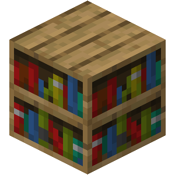
Cơ bản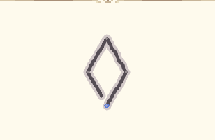
→ entity
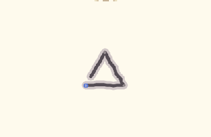
entity → vector
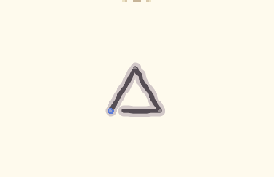
entity → vector
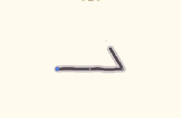
entity → vector
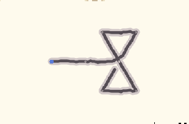
vector, vector → vector|null
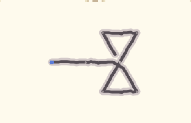
vector, vector → vector|null
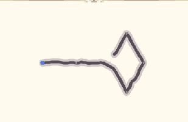
vector, vector → entity|null
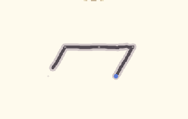
entity → number
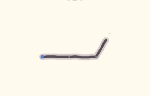
entity → vector
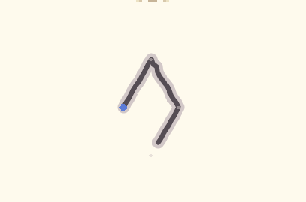
any → any
 Toán học
Toán học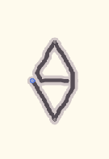
Số dương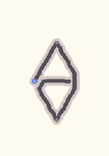
Số âm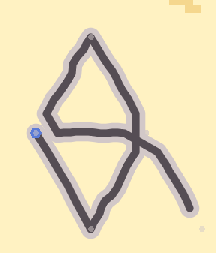
Trả lại số 10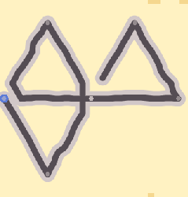
Trả lại số 4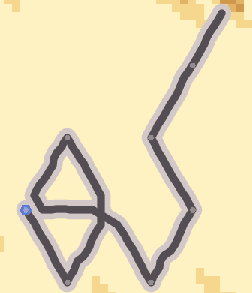
Trả lại số 36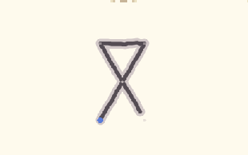
number|vector|list, number|vector|list → number|vector|list
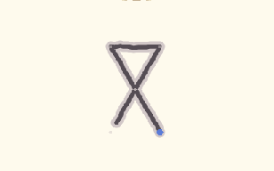
number|vector|list, number|vector → number|vector
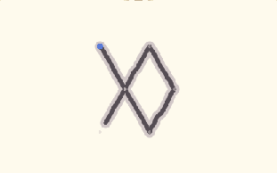
number|vector, number|vector → number|vector
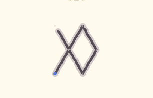
number|vector, number|vector → number|vector
 Thao tác thông tin
Thao tác thông tin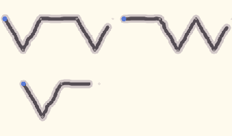
many → many
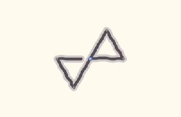
any, any → any, any
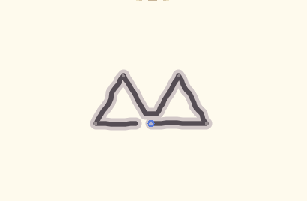
any → any, any
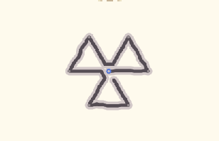
any, number → many
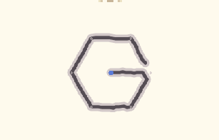
any →
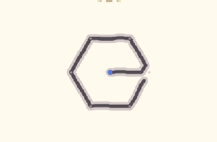
→ any
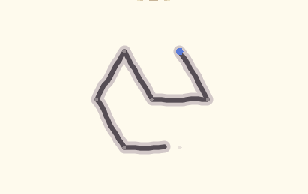
[pattern]|pattern → many
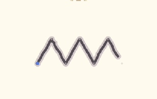
[pattern], list → many
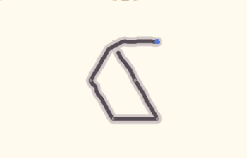
→
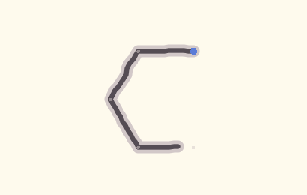
→
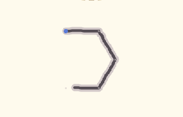
→

Nguyễn Đình Khánh - 12C
Gmail: pfskhanh7070@gmail.com